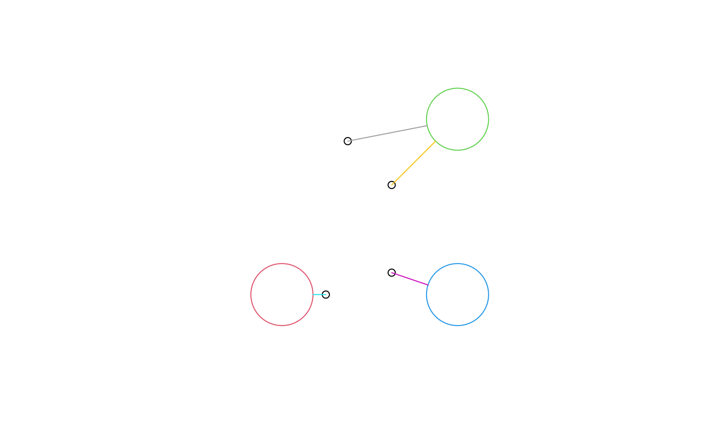

get index of nearest feature
st_nearest_feature(x, y)
| x | object of class |
|---|---|
| y | object of class |
for each feature (geometry) in x the index of the nearest feature (geometry) in y
st_nearest_points for finding the nearest points for pairs of feature geometries
ls1 = st_linestring(rbind(c(0,0), c(1,0))) ls2 = st_linestring(rbind(c(0,0.1), c(1,0.1))) ls3 = st_linestring(rbind(c(0,1), c(1,1))) (l = st_sfc(ls1, ls2, ls3))#> Geometry set for 3 features #> geometry type: LINESTRING #> dimension: XY #> bbox: xmin: 0 ymin: 0 xmax: 1 ymax: 1 #> epsg (SRID): NA #> proj4string: NA#>#>#>p1 = st_point(c(0.1, -0.1)) p2 = st_point(c(0.1, 0.11)) p3 = st_point(c(0.1, 0.09)) p4 = st_point(c(0.1, 0.9)) (p = st_sfc(p1, p2, p3, p4))#> Geometry set for 4 features #> geometry type: POINT #> dimension: XY #> bbox: xmin: 0.1 ymin: -0.1 xmax: 0.1 ymax: 0.9 #> epsg (SRID): NA #> proj4string: NA#>#>#>#>#> Error in CPL_geos_nearest_feature(st_geometry(x), st_geometry(y)) : #> GEOS version 3.6.1 required for selecting nearest features#> Error in CPL_geos_nearest_feature(st_geometry(x), st_geometry(y)) : #> GEOS version 3.6.1 required for selecting nearest featuresr = sqrt(2)/10 b1 = st_buffer(st_point(c(.1,.1)), r) b2 = st_buffer(st_point(c(.9,.9)), r) b3 = st_buffer(st_point(c(.9,.1)), r) circles = st_sfc(b1, b2, b3) plot(circles, col = NA, border = 2:4)pts = st_sfc(st_point(c(.3,.1)), st_point(c(.6,.2)), st_point(c(.6,.6)), st_point(c(.4,.8))) plot(pts, add = TRUE, col = 1)#> Error in CPL_geos_nearest_feature(st_geometry(x), st_geometry(y)) : #> GEOS version 3.6.1 required for selecting nearest featuresif (inherits(nearest, "try-error")) # GEOS 3.6.1 not available nearest = c(1, 3, 2, 2) ls = st_nearest_points(pts, circles[nearest], pairwise = TRUE) plot(ls, col = 5:8, add = TRUE)